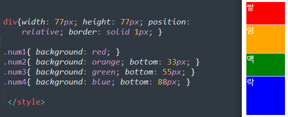

z-index 속성은 요소의 쌓임 순서(stack order)를 정의할 수 있다.
정수 값을 지정하여 쌓임 맥락 (stacking context)에서의 레벨을 정의하는 방식
으로 적용되며, 위치 지정 요소에 대해 적용할 수 있는 속성이다.
=위치 지정 요소(positioned element)란, position속성이 정의되어 있는 요소를 말함.
동일한 위치에 요소들이 배치되면, 요소들은 z축에서 쌓이게 됨.
Ex
